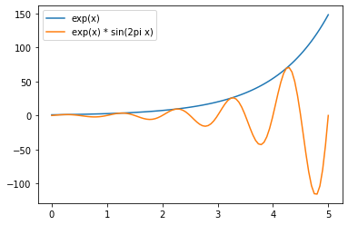

Videre med plotting
Oppgave 0: Oppsummering fra sist
I programmet under lager vi et plot for to funksjoner, \(\exp (x)\) (eller det vi er vant til å skrive som \(e^x\)) og \(\exp(x)\cdot\sin(2\pi x)\). Vi tegner begge for \(x\in\left[0,5\right]\).
import numpy as np import matplotlib.pyplot as plt xs = np.linspace(0, 5, 100) y1 = np.exp(xs) y2 = np.exp(xs) * np.sin(2 * np.pi * xs) plt.plot(xs, y1, label="exp(x)") plt.plot(xs, y2, label="exp(x) * sin(2pi x)") plt.legend()

Legg til ytterligere en linje på dette plottet, tegn \(\exp(x)\cdot\sin(2\pi x^2)\).
Oppgave 1: Babylonernes metode
I denne oppgaven skal du lage to sammensatte plot. Du får spesifikasjonene til plottene som lister, og oppgaven din er å lage plot som oppfyller spesifikasjonene. Du rådes til å bygge opp plottet element for element, og sjekke at du er på rett vei før du går videre. Oppgaven sier ikke noe om hva som er en hensiktsmessig rekkefølge for deg å gjøre dette på.
Du skal utforske Babylonernes metode for å finne kvadratroten av et tall. Be brukeren om dette tallet, kall det S. Du skal bruke tre startgjetninger for x, hvor x**2 == S, bruk x = 1, x = S/2 og x = S som startgjetninger.
- Tegn et plott som viser utviklingen av
x_nmed en linje for hver av startgjetningene. - For hver linje, marker den laveste verdien
xtok med en blå sirkel. - For hver linje, marker den høyeste verdien
xtok med en rød sirkel. - Tegn en horisontal linje som viser den faktiske verdien til \(\sqrt{S}\). (Her kan du bruke
plt.axhline(y), hvoryer \(y\)-verdien du ønsker linja ved. - Av punktene over skal du lage to plott, ett hvor du tegner ti iterasjoner, og ett hvor du tegner fram til
abs(S - x**2) < 0.0001.
Lykke til!